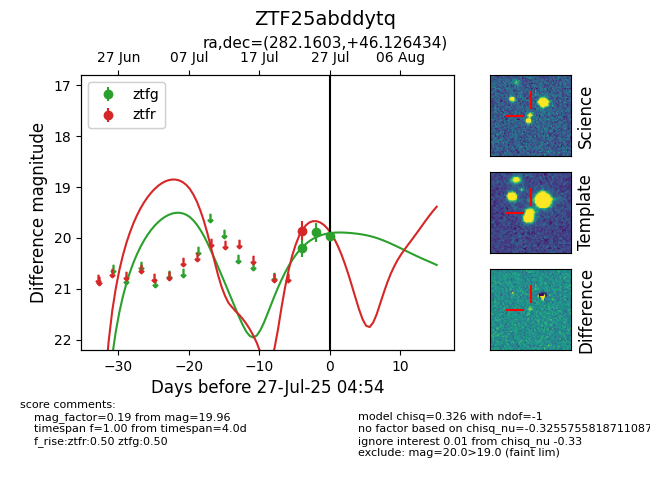

Target ZTF25abddytq at 2025-07-27 04:54, see:
FINK: fink-portal.org/ZTF25abddytq
Lasair: lasair-ztf.lsst.ac.uk/objects/ZTF25abddytq
ALeRCE: alerce.online/object/ZTF25abddytq
alt names
ZTF25abddytq (ztf,fink)
coordinates:
equatorial (ra, dec) = (282.1603,+46.12643)
galactic (l, b) = (75.5520,+19.64748)
photometry
last ztfg=19.96, ztfr=19.85
3 ztfg, 1 ztfr detections
